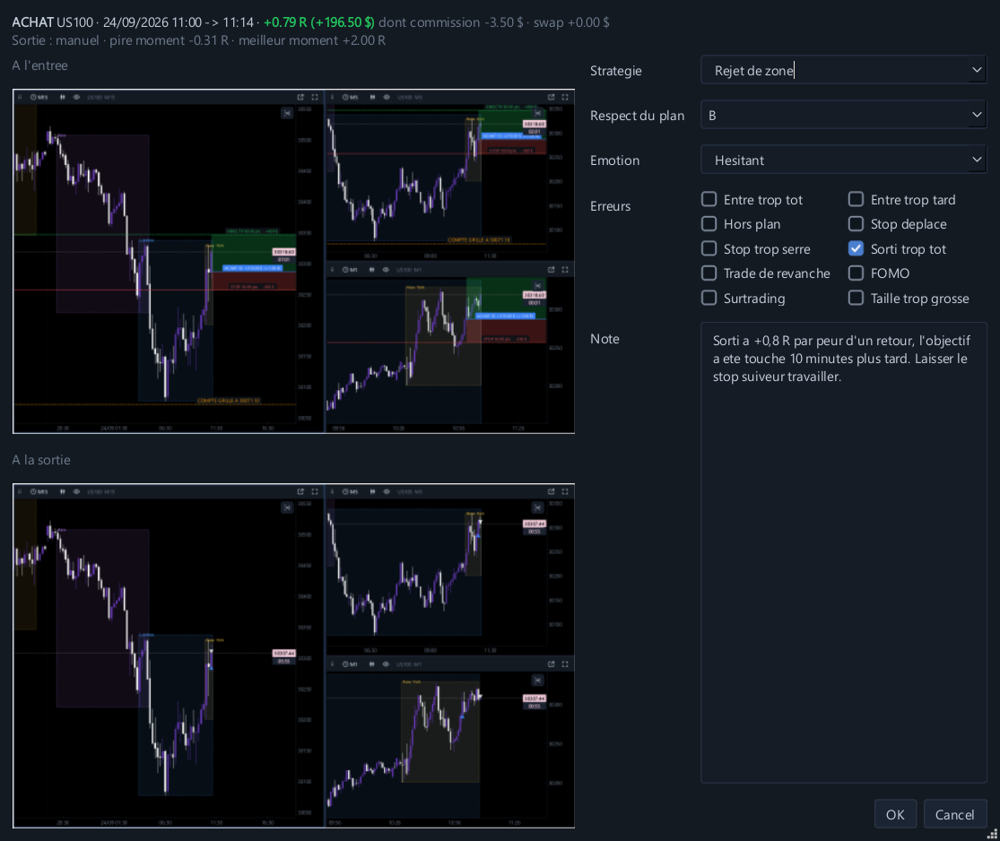
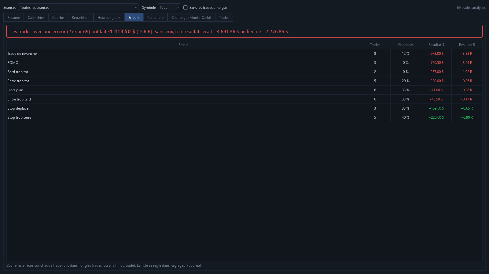
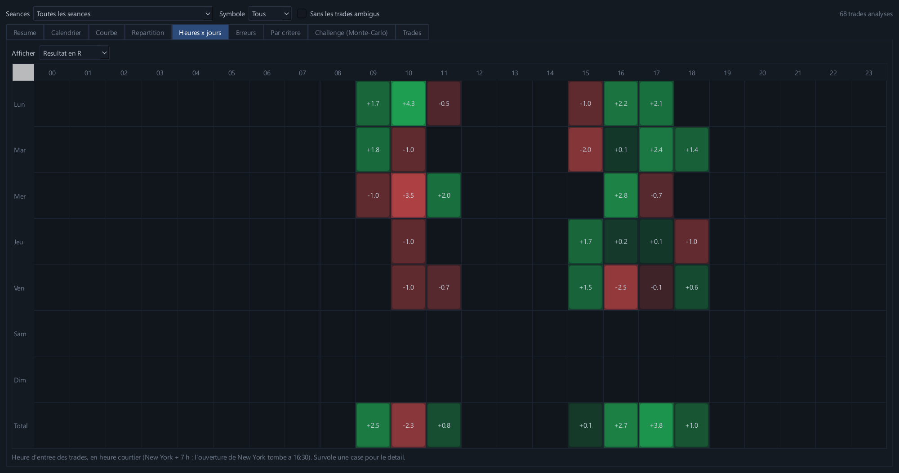

Replay, journal, coach, Monte-Carlo. Tout en un.
Plus besoin d'une plateforme de replay, d'un journal en ligne et d'un outil de statistiques : FloorDesk One réunit tout dans un seul logiciel. Tu rejoues le marché, chaque trade s'enregistre tout seul, le coach te montre tes erreurs et le Monte-Carlo calcule tes vraies chances. Et quand tu veux, passe en direct sur les prix de ton courtier avec MetaTrader 5, compris dans l'abonnement. Pour les traders CFD et prop firm (FTMO, FundedNext, The5ers…).

4 outils en 1, un seul abonnement
Ce que tu paierais d'habitude en plusieurs abonnements, réuni dans un seul logiciel. Les outils se parlent : tes trades du replay vont directement dans le journal, le coach et le Monte-Carlo.
1Le replay
Rejoue n'importe quelle séance bougie par bougie, sur 1 à 4 graphiques, avec les annonces économiques à leur heure et un Trade Manager complet.

2Le journal
Chaque trade enregistré tout seul, avec ses captures d'entrée et de sortie, ton setup, ton émotion et tes erreurs. Et le calendrier du mois.

3Le coach
Ce que tes trades disent de toi : ton erreur la plus chère, tes meilleures heures, et un verdict statistique honnête sur ton edge.

4Le Monte-Carlo
Tes trades rejoués des milliers de fois : tes chances de réussir un challenge prop firm, et le risque par trade qui te donne le plus de chances.
Une plateforme de replay + un journal de trading + un coach + un simulateur Monte-Carlo = FloorDesk One, 19 $ par mois.
Tout ton entraînement au même endroit
Replay, gestion du risque, annonces, journal et statistiques : plus besoin de jongler entre cinq outils.
Graphiques multi-unités
1 à 4 graphiques synchronisés, des secondes au jour, Heikin Ashi, Renko, Range, graphiques en ticks.
Replay et direct
Rejoue n'importe quelle séance bougie par bougie, jusqu'à x3000. Ou entraîne-toi en direct sur les prix de ton courtier, avec MetaTrader 5.
Annonces économiques
NFP, CPI, décisions de la Fed : chaque annonce à son heure sur le graphique, depuis 2010.
Trade Manager
Lot calculé sur ton risque, break-even, stop suiveur, sorties partielles, ordres limite et stop, commission et swap.
Journal et calendrier
Chaque trade avec ses captures, son setup, ton émotion et tes erreurs. Le mois en un coup d'œil.
Coût de tes erreurs
Entrée trop tôt, stop déplacé, trade de revanche : FloorDesk One calcule ce que chaque erreur t'a coûté.
Analyse honnête
Espérance, verdict statistique, heures et jours gagnants, coach : un edge se prouve, il ne se ressent pas.
Challenge prop firm
FTMO, FundedNext, The5ers ou tes règles, appliquées à chaque mouvement de prix, et tes chances de réussir.
Plus de 110 symboles
Forex, indices, métaux, énergie, crypto : historique 1 minute téléchargé gratuitement, ou ton propre historique.
Les annonces économiques, comme en vrai
Le marché ne bouge pas au hasard : une banque centrale, l'emploi ou l'inflation peuvent tout renverser. FloorDesk One trace chaque annonce rouge des 8 grandes devises à son heure exacte, pendant ton replay.
- USD, EUR, GBP, JPY, CHF, CAD, AUD, NZD : banques centrales, inflation, emploi, PIB, ventes au détail
- Seulement les annonces rouges (fort impact) : dates officielles depuis 2010, et celles à venir
- Le compte à rebours de la prochaine annonce dans le panneau de trading
- La règle « pas de trade autour des annonces » de nombreuses prop firms, appliquée pour toi
- Tes propres annonces en plus, si tu veux
Le journal qui te dit la vérité
Chaque trade est enregistré tout seul : captures à l'entrée et à la sortie, pire et meilleur moment, commission et swap. Tu ajoutes ton setup, ton émotion et tes erreurs en deux clics.
Ton mois en un coup d'œil
Le calendrier montre ce que chaque journée a rapporté, le nombre de trades, le taux de réussite et le total de la semaine. Les mauvaises séries sautent aux yeux.
- Résultats frais compris, en dollars et en R
- Filtres par séance, symbole, challenge
- Export Excel de tous tes trades
Chaque trade, décortiqué
La fiche d'un trade réunit ses deux captures, son résultat, son pire et son meilleur moment. Coche tes erreurs, note ce que tu aurais dû faire, et revois-le sur les graphiques en un clic.
- Setup, respect du plan (A / B / C), émotion
- Erreurs à cocher : entrée trop tôt, stop déplacé, sortie trop tôt… liste réglable
- « Revoir sur les graphiques » te replace au moment du trade


Un verdict qui ne te ment pas
Avec 20 trades, n'importe qui peut afficher un beau résultat. FloorDesk One calcule la fourchette de ton espérance et ne parle d'edge que s'il est statistiquement prouvé.
- Résultats par setup, heure, jour, sens, émotion
- Le coach : ce que tes trades disent de ta façon de trader, et ton erreur la plus chère
- Trades ambigus signalés : le replay n'est jamais plus gentil que le marché
Captures réalisées avec des trades de démonstration, pas des résultats réels.
Prop firm : les vraies règles, et tes vraies chances
Choisis FTMO, FundedNext, The5ers ou règle ton propre challenge : FloorDesk One applique chaque règle à chaque mouvement de prix, flottant compris. Puis le Monte-Carlo rejoue tes trades des milliers de fois.
- Drawdown statique, suiveur ou fin de journée, perte max du jour, consistance
- Le prix exact qui grillerait ton compte, tracé sur le graphique
- Ton pourcentage de réussite, et le risque par trade qui te donne le plus de chances
- Tu sais combien d'essais payants prévoir avant de dépenser 1 €
Tous les marchés, rangés et à portée de clic
Plus de 110 symboles classés par catégorie, avec une recherche qui comprend « or », « nasdaq » ou « bitcoin ». Double-clic : l'historique 1 minute se télécharge gratuitement.
- Forex majeures, croisées et exotiques, indices, métaux, énergie, crypto
- L'historique de ton courtier est lu automatiquement, un seul nom par instrument
- Données tick en option

Le Défi de la semaine
Chaque lundi, un nouveau moment de marché, le même pour tout le monde et avec les mêmes données : une ouverture de New York, un krach célèbre, un CPI explosif… La date reste cachée jusqu'à la fin.
- Inclus dans l'abonnement, et à essayer pendant les 7 jours gratuits
- Une carte de résultat à partager (Instagram, TikTok, X, Discord) : « bats mon score »
- Les journées légendaires : krach du Covid, BNS 2015, nuit du Brexit, CPI de novembre 2022…
- Et pour t'entraîner : 20 répétitions de l'ouverture de New York en une soirée, en aveugle
Un seul logiciel, pour 19 $ par mois
Replay, gestion des trades, annonces, journal et prop firm dans un seul logiciel.
| Outil de replay classique | Journal de trading en ligne | FloorDesk One | |
|---|---|---|---|
| Replay multi-graphique synchronisé | ✓ | — | ✓ |
| Annonces économiques sur le graphique pendant le replay | — | — | ✓ |
| Trade Manager : lot au risque, break-even, sorties partielles | — | — | ✓ |
| Journal avec calendrier et coût des erreurs | — | ✓ | ✓ |
| Règles de prop firm appliquées à chaque mouvement de prix | — | — | ✓ |
| Probabilité de réussir ton challenge (Monte-Carlo) | — | — | ✓ |
| Verdict statistique et coach | — | — | ✓ |
Un prix simple
Commence par 7 jours gratuits, sans carte bancaire. Toutes les fonctions sont incluses dans chaque formule.
Mensuel
- Toutes les fonctions
- Mises à jour incluses
- 1 PC par licence
Annuel
- Toutes les fonctions
- Mises à jour incluses
- 1 PC par licence
Prix en dollars US, affiché dans ta monnaie au paiement. Paiement sécurisé par Gumroad, notre revendeur officiel, qui calcule et reverse les taxes de ton pays.
Teste gratuitement 7 jours avant d'acheter. Conditions de vente
Après l'achat : activer ta clé en 3 clics.
Questions fréquentes
Puis-je trader mon vrai compte avec FloorDesk One ?
Pas encore. FloorDesk One est un logiciel d'entraînement : en replay comme en direct, tes ordres sont simulés, sans argent réel. En direct, tu vois les vrais prix de ton courtier grâce à MetaTrader 5 (installé sur ton PC, une démo gratuite suffit). Tu gardes ta plateforme habituelle pour passer tes vrais ordres.
D'où viennent les annonces économiques ?
Des calendriers officiels de chaque pays : banques centrales (Fed, BCE, Banque d'Angleterre, Banque du Japon, BNS, Banque du Canada, RBA, RBNZ) et instituts de statistiques. Les dates vont de 2010 à l'an prochain. Tu peux ajouter tes propres annonces.
D'où viennent les données de marché ?
La fenêtre Symboles télécharge gratuitement l'historique 1 minute de plus de 110 symboles (forex, indices, métaux, énergie, crypto). FloorDesk One lit aussi l'historique de ta plateforme de courtier et les fichiers CSV, et, en option, des données tick. En direct, les prix viennent de ton courtier par MetaTrader 5, et la crypto de Binance.
Sur quels ordinateurs ça marche ?
Windows 10 et 11 (64 bits). Pas de version Mac pour l'instant.
Les règles des prop firms sont-elles exactes ?
Les modèles FTMO, FundedNext et The5ers reprennent leurs règles principales, et tout est modifiable. Les prop firms changent régulièrement leurs conditions : vérifie-les toujours sur leur site avant un vrai challenge.
Est-ce que ça garantit que je vais gagner ou réussir mon challenge ?
Non. FloorDesk One est un logiciel d'analyse et d'entraînement : il te montre honnêtement ce que valent tes trades et tes chances. Les résultats simulés ou passés ne garantissent pas les résultats futurs.
Où je mets ma clé de licence après l'achat ?
Dans FloorDesk One : bouton ? en haut à droite → Licence..., colle la clé reçue par email, puis Activer. Voir en images.
Puis-je changer d'ordinateur ?
Une licence fonctionne sur 1 PC à la fois. Pour changer d'ordinateur, libère la licence depuis le menu ? → Licence.
Faut-il une connexion internet ?
Pour télécharger l'historique, oui. Le replay, le journal et l'analyse marchent hors ligne : la licence se vérifie une fois par semaine, et tu peux travailler jusqu'à 14 jours sans internet.
Puis-je arrêter mon abonnement ?
Oui, à tout moment, en un clic depuis l'email de ton achat. Tu gardes l'accès jusqu'à la fin de la période déjà payée, sans autre prélèvement. Les 7 jours d'essai gratuit servent à tout tester avant d'acheter.
Windows affiche « Windows a protégé votre ordinateur »
C'est normal pour un logiciel récent. Clique sur « Informations complémentaires » puis « Exécuter quand même ».
Prêt à t'entraîner ?
7 jours gratuits, toutes les fonctions, sans carte bancaire. Ensuite 19 $ par mois.
Télécharger FloorDesk One